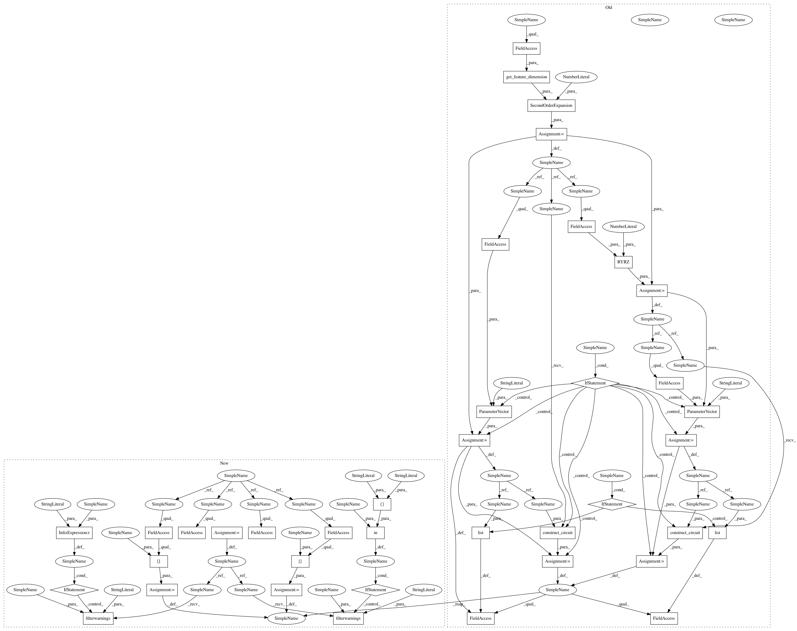

97c9871e334ae1e98c4eba025cf352e70f6a6701,test/aqua/test_vqc.py,TestVQC,test_vqc,#TestVQC#Any#,56
Before Change
aqua_globals.random_seed = self.seed
optimizer = SPSA(max_trials=10, save_steps=1,
c0=4.0, c1=0.1, c2=0.602, c3=0.101, c4=0.0, skip_calibration=True)
feature_map = SecondOrderExpansion(
feature_dimension=get_feature_dimension(self.training_data), depth=2)
var_form = RYRZ(num_qubits=feature_map.num_qubits, depth=3)
// convert to circuit if circuits should be used
if use_circuits:
x = ParameterVector("x", feature_map.feature_dimension)
feature_map = feature_map.construct_circuit(x)
theta = ParameterVector("theta", var_form.num_parameters)
var_form = var_form.construct_circuit(theta)
// set up algorithm
vqc = VQC(optimizer, feature_map, var_form, self.training_data, self.testing_data)
// sort parameters for reproducibility
if use_circuits:
vqc._feature_map_params = list(x)
vqc._var_form_params = list(theta)
quantum_instance = QuantumInstance(BasicAer.get_backend("qasm_simulator"),
shots=1024,
seed_simulator=aqua_globals.random_seed,
seed_transpiler=aqua_globals.random_seed)
After Change
"library": library_circuit}
@data("wrapped", "circuit", "library")
def test_vqc(self, mode):
vqc test
aqua_globals.random_seed = self.seed
optimizer = SPSA(max_trials=10, save_steps=1,
c0=4.0, c1=0.1, c2=0.602, c3=0.101, c4=0.0, skip_calibration=True)
data_preparation = self.data_preparation[mode]
wavefunction = self.ryrz_wavefunction[mode]
if mode == "wrapped":
warnings.filterwarnings("ignore", category=DeprecationWarning)
// set up algorithm
vqc = VQC(optimizer, data_preparation, wavefunction, self.training_data, self.testing_data)
if mode in ["circuit", "library"]:
vqc._feature_map_params = self._sorted_data_params
vqc._var_form_params = self._sorted_wavefunction_params
else:
warnings.filterwarnings("always", category=DeprecationWarning)
quantum_instance = QuantumInstance(BasicAer.get_backend("qasm_simulator"),
shots=1024,
seed_simulator=aqua_globals.random_seed,
seed_transpiler=aqua_globals.random_seed)
In pattern: SUPERPATTERN
Frequency: 3
Non-data size: 39
Instances
Project Name: Qiskit/qiskit-aqua
Commit Name: 97c9871e334ae1e98c4eba025cf352e70f6a6701
Time: 2020-04-30
Author: jules.gacon@googlemail.com
File Name: test/aqua/test_vqc.py
Class Name: TestVQC
Method Name: test_vqc
Project Name: Qiskit/qiskit-aqua
Commit Name: 97c9871e334ae1e98c4eba025cf352e70f6a6701
Time: 2020-04-30
Author: jules.gacon@googlemail.com
File Name: test/aqua/test_vqc.py
Class Name: TestVQC
Method Name: test_vqc_with_max_evals_grouped
Project Name: Qiskit/qiskit-aqua
Commit Name: 97c9871e334ae1e98c4eba025cf352e70f6a6701
Time: 2020-04-30
Author: jules.gacon@googlemail.com
File Name: test/aqua/test_vqc.py
Class Name: TestVQC
Method Name: test_vqc_statevector
Project Name: Qiskit/qiskit-aqua
Commit Name: 97c9871e334ae1e98c4eba025cf352e70f6a6701
Time: 2020-04-30
Author: jules.gacon@googlemail.com
File Name: test/aqua/test_vqc.py
Class Name: TestVQC
Method Name: test_vqc